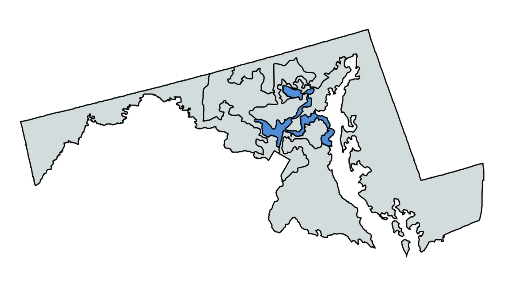
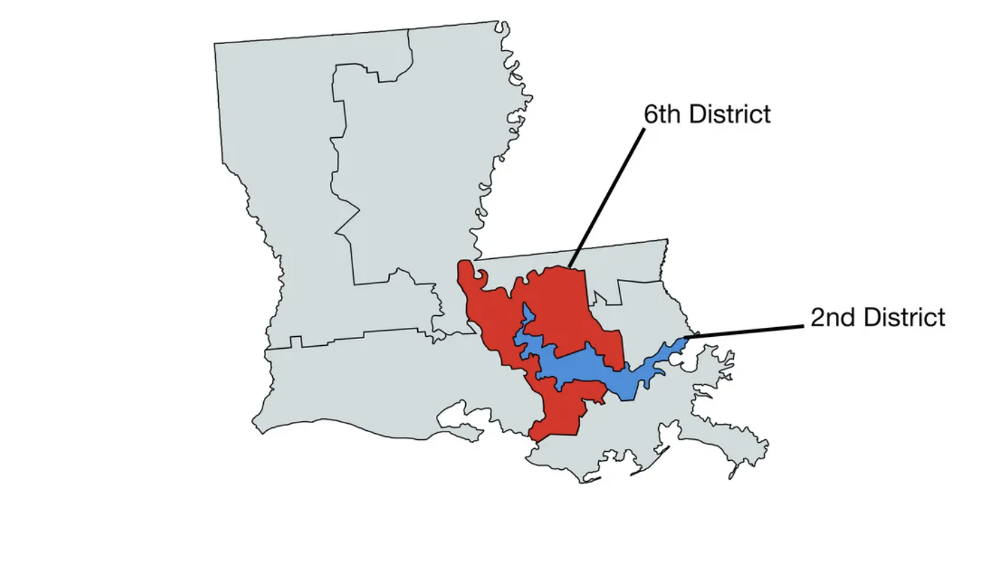
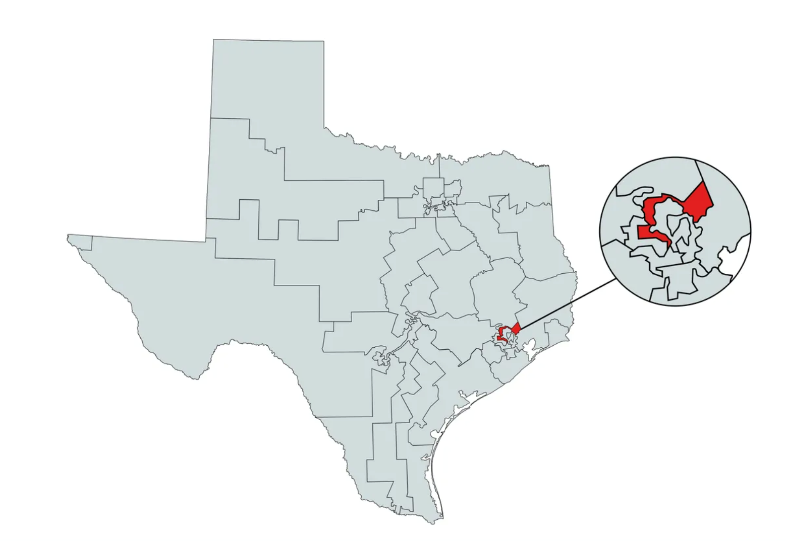
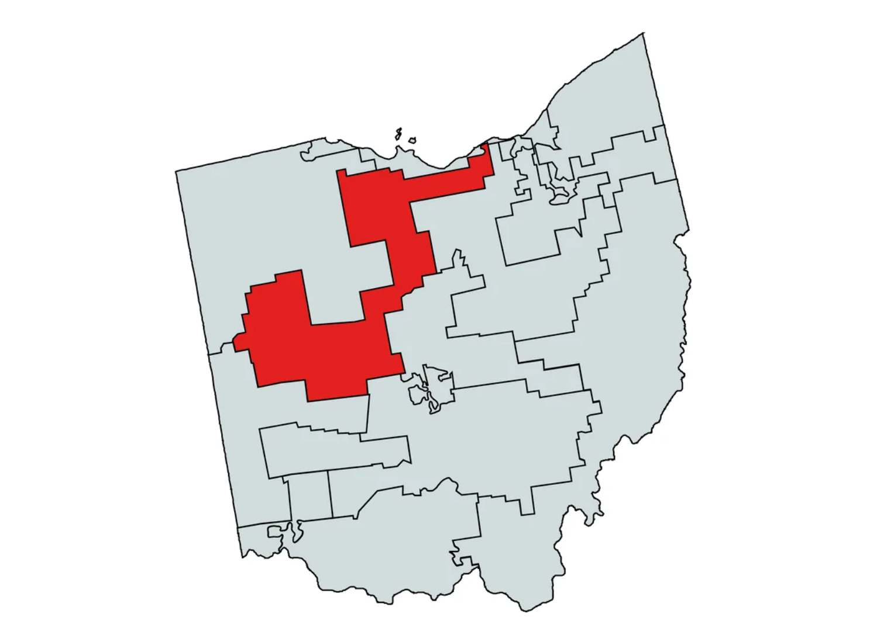

Gerrymandering
Exposing Gerrymandering Through Education
Home Page
Interactive Map
About Us
How Do Other Countries Handle Gerrymandering?
Past Data
Future
Examples of Gerrymandered Districts
Maryland

Louisiania

Texas

Ohio

Take a look at current districts to see occurences of gerrymandering!